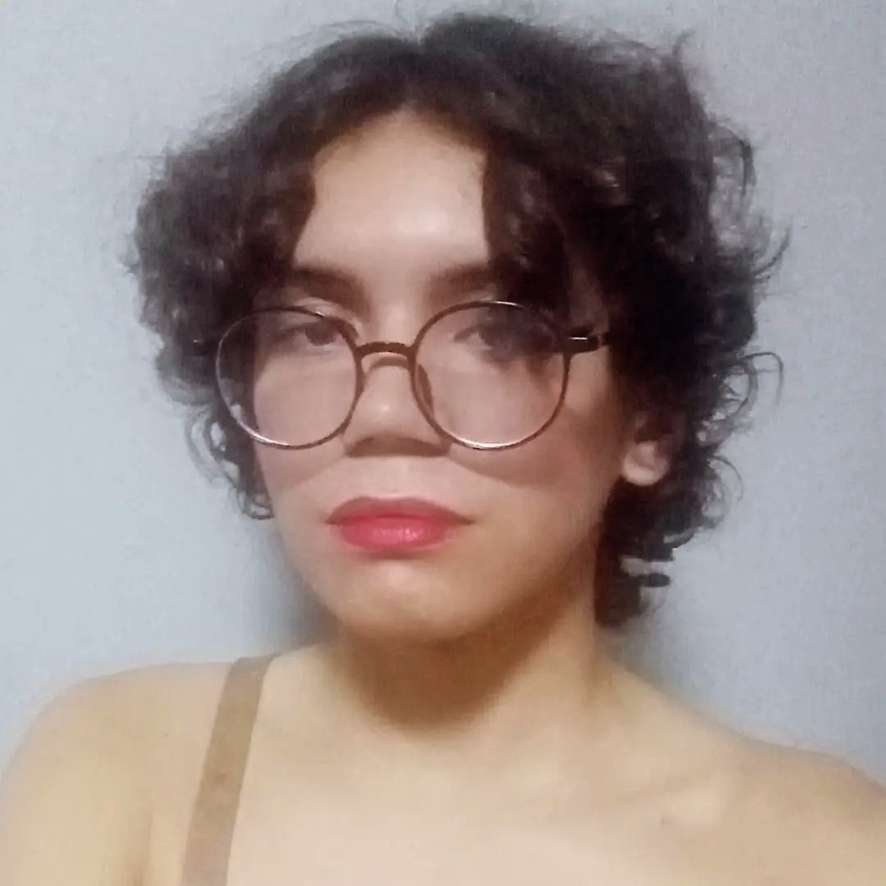

Sobre Mim:

Meu nome é Sabrina Dante, mas sou conhecida também como Ms. Athena ou simplesmente Athena.
Sou uma mulher trans, tenho 22 anos e estou no 3° semestre do Bacharelado em Estatística da Universidade Federal do Ceará.
Além disso, também curso Engenharia Full-Stack pela Codecademy.
Desde muito nova eu sempre fui fã de ficção-científica e sempre me interessei por tecnologia.
Dedico grande parte do meu tempo aos estudos, principalmente a estudar programação, matemática e ciência da computação.
Penso futuramente em me especializar na área de Ciência de Dados ou Machine Learning dentro do meu curso.
Meus hobbies incluem escrita criativa, desenho de pixel-arts e video games, sendo o último o motivo de eu estar desenvolvendo um
game. Gosto bastante de ouvir música enquanto desenvolvo meus projetos. Sou bastante comunicativa e vivo cada dia
de forma intensa e sempre buscando aprender algo novo ou tirar uma boa lição dos momentos caóticos da vida.